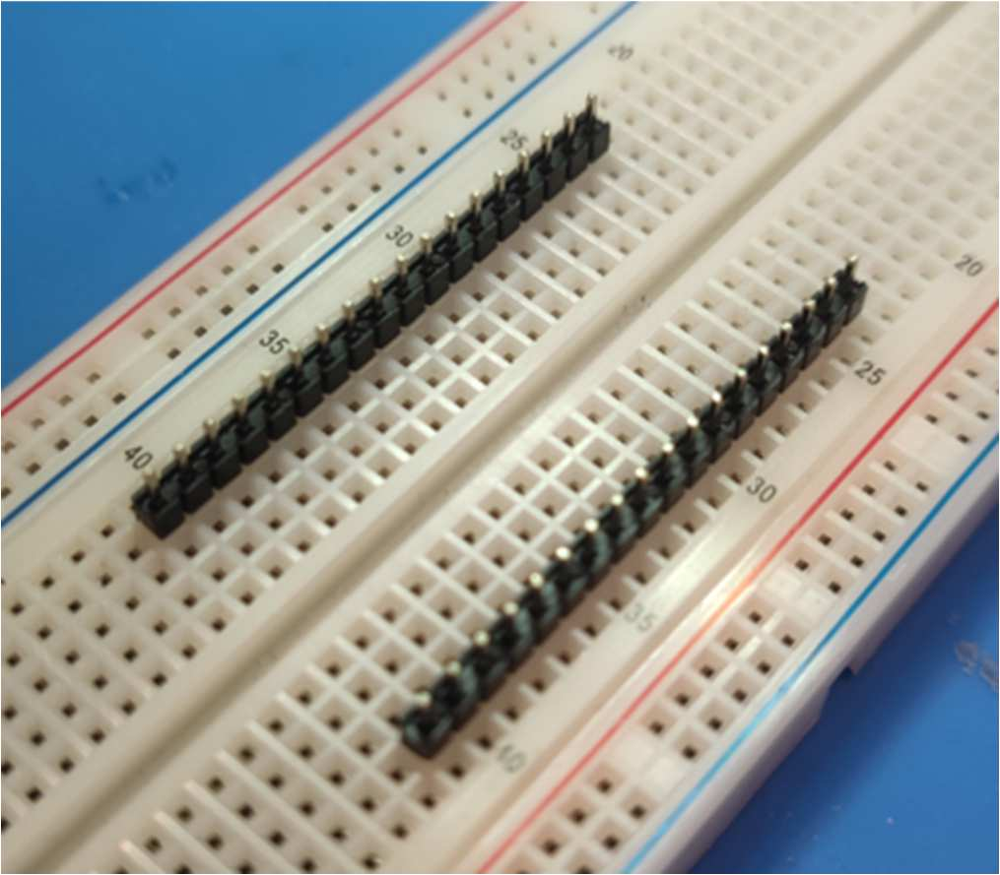
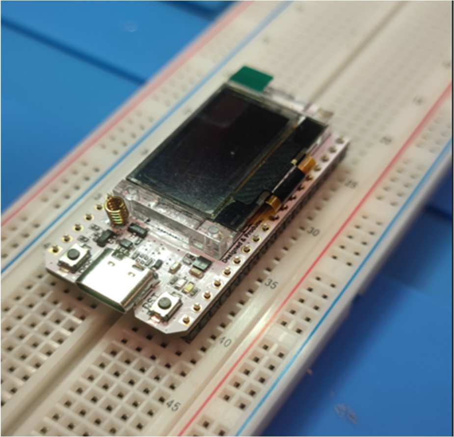
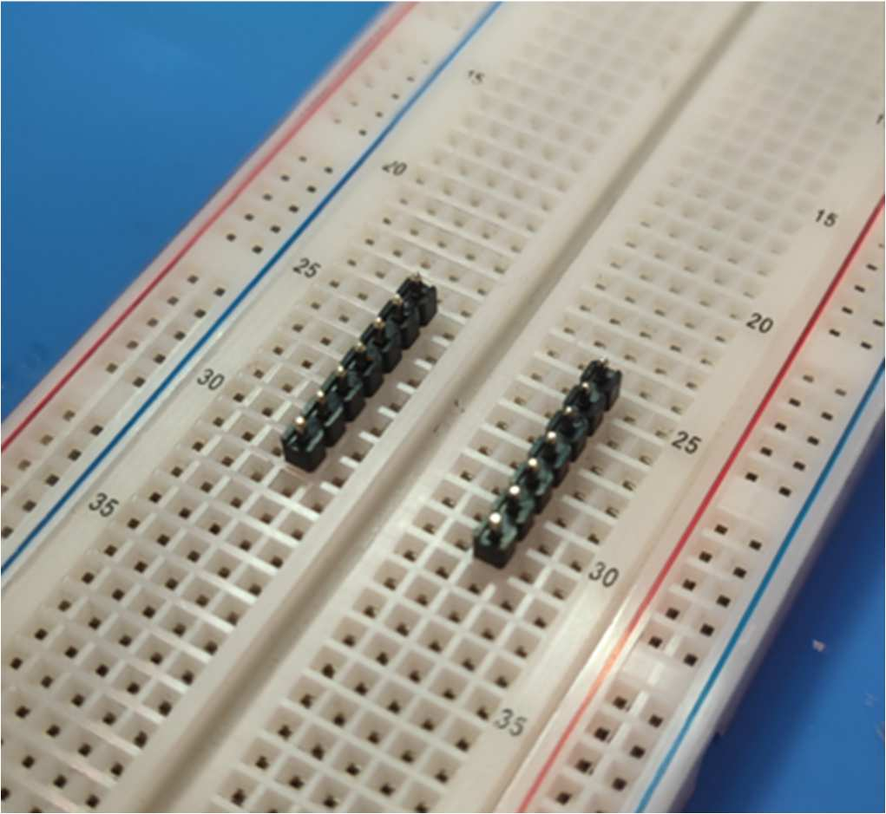
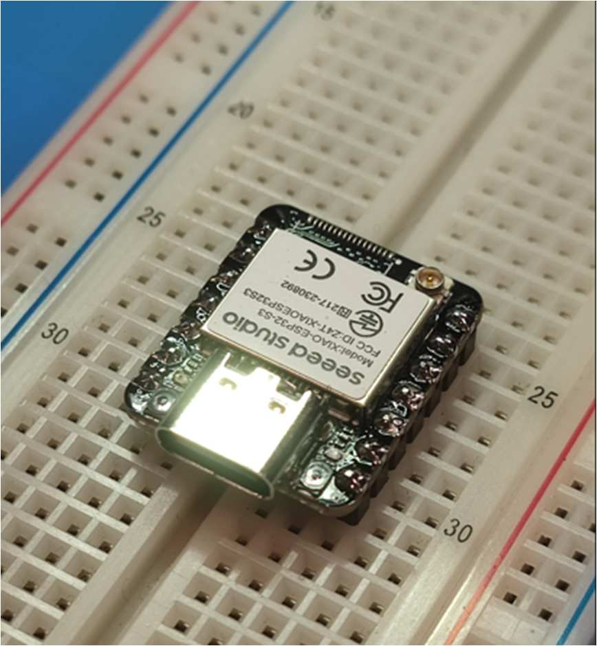

LoRa module (tip: you do not need to remove the screen before soldering)
Unscrew the three screws under the screen and hold the screen back to reach the pins near the glass and the flex cable. Solder the pins, then refit the screen and the screws.
To save power, leave the screen fitted and turn it off with scripts/meshtastic_config.py --screen off.
You can also desolder the screen permanently. This is advanced and at your own risk, because Heltec publishes no removal procedure. A node without a screen needs its Bluetooth pairing PIN set over serial: scripts/meshtastic_config.py --pin NNNNNN.


ESP32 module (XIAO)

